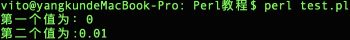
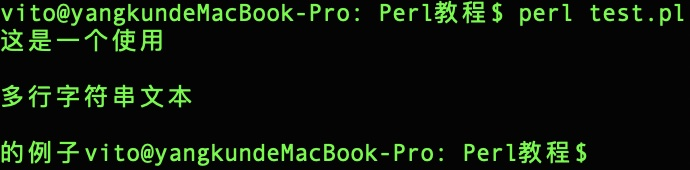
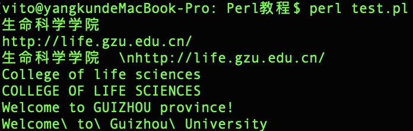

Perl 数据类型
Perl 是一种弱类型语言，所以变量不需要指定类型，Perl 解释器会根据上下文自动选择匹配类型。
Perl 有三个基本的数据类型：标量、数组、哈希。以下是这三种数据类型的说明：
| 序号 | 类型和描述 |
|---|---|
| 1 | 标量
标量是 Perl 语言中最简单的一种数据类型。这种数据类型的变量可以是数字，字符串，浮点数，不作严格的区分。在使用时在变量的名字前面加上一个 $，表示是标量。例如： $myfirst=123; #数字123 $mysecond="123"; #字符串123 |
| 2 | 数组
数组变量以字符 @ 开头，索引从 0 开始，如：@arr=(1,2,3) @arr=(1,2,3) |
| 3 | 哈希
哈希是一个无序的 key/value 对集合。可以使用键作为下标获取值。哈希变量以字符 % 开头。 %h=('a'=>1,'b'=>2); |
数字字面量
一、整型
Perl 实际上把整数存在你的计算机中的浮点寄存器中，所以实际上被当作浮点数看待。
在多数计算机中，浮点寄存器可以存贮约 16 位数字，长于此的被丢弃。整数实为浮点数的特例。
整型变量及运算：
$x = 12345; if (1217 + 116 == 1333) { # 执行代码语句块 }
8 进制和 16 进制数：8 进制以 0 开始，16 进制以 0x 开始。例如：
$var1 = 047; # 等于十进制的39 $var2 = 0x1f; # 等于十进制的31
二、浮点数
浮点数数据如：11.4 、 -0.3 、.3 、 3. 、 54.1e+02 、 5.41e03。
浮点寄存器通常不能精确地存贮浮点数，从而产生误差，在运算和比较中要特别注意。指数的范围通常为 -309 到 +308。
实例
#!/usr/bin/perl
$value = 9.01e+21 + 0.01 - 9.01e+21;
print ("第一个值为：", $value, "\n");
$value = 9.01e+21 - 9.01e+21 + 0.01;
print ("第二个值为:", $value, "\n");
执行以上程序，输出结果为：

三、字符串
Perl 中的字符串使用一个标量来表示，定义方式和 c 很像，但是在 Perl 里面字符串不是用 \0 来表示结束的。
Perl 双引号和单引号的区别: 双引号可以正常解析一些转义字符与变量，而单引号无法解析会原样输出。
但是用单引号定义可以使用多行文本，如下所示：
#!/usr/bin/perl $var='这是一个使用 多行字符串文本 的例子'; print($var);
执行以上程序，输出结果为：

Perl 语言中常用的一些转义字符如下表所示：
| 转义字符 | 含义 |
|---|---|
| \\ | 反斜线 |
| \' | 单引号 |
| \" | 双引号 |
| \a | 系统响铃 |
| \b | 退格 |
| \f | 换页符 |
| \n | 换行 |
| \r | 回车 |
| \t | 水平制表符 |
| \v | 垂直制表符 |
| \0nn | 创建八进制格式的数字 |
| \xnn | 创建十六进制格式的数字 |
| \cX | 控制字符，x可以是任何字符 |
| \u | 强制下一个字符为大写 |
| \l | 强制下一个字符为小写 |
| \U | 强制将所有字符转换为大写 |
| \L | 强制将所有的字符转换为小写 |
| \Q | 将到\E为止的非单词（non-word）字符加上反斜线 |
| \E | 结束\L、\U、\Q |
实例
接下来让我们来具体看看单引号和双引号及转义字符的使用：
实例
#!/usr/bin/perl
# 换行 \n 位于双引号内，有效
$str = "生命科学学院 \nhttp://life.gzu.edu.cn/";
print "$str\n";
# 换行 \n 位于单引号内，无效
$str = '生命科学学院 \nhttp://life.gzu.edu.cn/';
print "$str\n";
# 只有 C 会转换为大写
$str = "\ucollege of life sciences";
print "$str\n";
# 所有的字母都会转换为大写
$str = "\Ucollege of life sciences";
print "$str\n";
# 指定部分会转换为大写
$str = "Welcome to \UGuizhou\E province!";
print "$str\n";
# 将到\E为止的非单词（non-word）字符加上反斜线
$str = "\QWelcome to Guizhou \EUniversity";
print "$str\n";
以上实例执行输出结果为：
